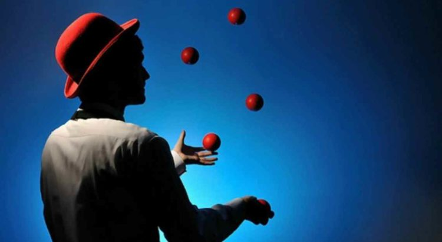

Cubo mágico
Cubo Mágico, também conhecido como Cubo de Rubik, é um quebra-cabeça tridimensional, inventado pelo húngaro Ernő Rubik em 1974.Originalmente foi chamado o "Cubo Mágico" pelo seu inventor, mas o nome foi alterado pela Ideal Toys para "Cubo de Rubik" nos Estados Unidos. Nesse mesmo ano, ganhou o prémio alemão do "Jogo do Ano" (Spiel des Jahres). Ernő Rubik demorou um mês para resolver o cubo pela primeira vez. O cubo de Rubik tornou-se um ícone da década de 1980, década em que foi mais difundido.

Programação
Programação é o processo de escrita, teste e manutenção de um programa de computador. O programa é escrito em uma linguagem de programação, embora seja possível, com alguma dificuldade, escrevê-lo diretamente em linguagem de máquina. Diferentes partes de um programa podem ser escritas em diferentes linguagens.
